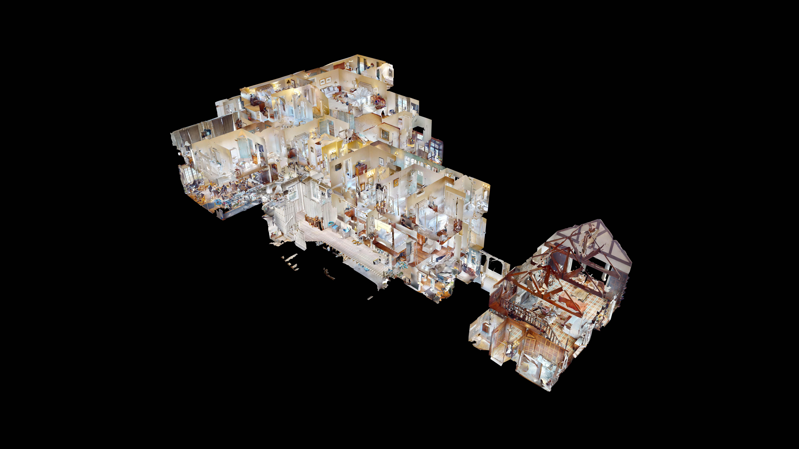

Southeast 3D Tours delivers professional reality capture for architects, engineers, general contractors, retailers, and facilities teams — interactive digital twins, E57 point clouds, schematic floor plans, and BIM-ready files from a single on-site scan.

Using Matterport Pro-series cameras, we capture your space in a single visit and deliver a complete digital twin — an interactive, measurable 3D model accessible from anywhere, on any device, without specialized software. From that same capture, we are able to deliver schematic floor plans, E57 point cloud files for CAD and Revit workflows, and BIM-ready data that plugs directly into your existing documentation processes.
Every reality capture engagement starts with a professional on-site scan. From that single capture, we can deliver any combination of the following.
Professional schematic floor plans for marketing residential spaces and commercial offices.
Transform your Matterport Space into a 2D CAD file that can be utilized throughout the building lifecycle, including design, construction, and facilities management.
Transform your Matterport Space into a 3D Revit model and 2D CAD file that can be utilized throughout the building lifecycle, including design, construction and facilities management.
TruePlan™ are SKX files that you can easily import into Xactimate®. With these files, you no longer have to measure and manually sketch losses.
The MatterPak™ is a set of files generated from the collected 3D data that design and development professionals can use to jumpstart projects.
Matterport Sketch File™ are instantly created FML files that are immediately imported into "Estimate by Cotality".
Once enabled, you and collaborators on this account can purchase a high density point cloud and cubemap image for all scan locations in a vendor neutral format.
The same scan delivers different value depending on your role and workflow.
Capture accurate existing conditions for renovation, tenant improvement, or adaptive reuse projects — without burning hours on manual field measurements and return trips for missed dimensions. We scan the space once. You receive a digital twin your team can walk through remotely, an E57 point cloud as a CAD/Revit underlay, and optionally a BIM file to jumpstart your 3D model. When questions come up during design development, the digital twin answers them — no RFI, no site visit.
Best for: Existing conditions documentation, renovation design, space planning, historic preservation, code studies.
Document site conditions before, during, and after construction with full spatial context — not disconnected photos and field notes that get lost in the shuffle. Pre-demolition scans give you a complete record of existing conditions. Progress scans at key milestones create a visual and spatial timeline. Final as-built scans provide the owner with a deliverable that goes beyond marked-up drawings.
Best for: Pre-construction existing conditions, construction progress documentation, punch list verification, as-built records, dispute documentation.
Get consistent, reliable documentation across multiple locations for remodel programs, brand standards verification, and fixture planning — without sending your own team to every site. We deliver standardized outputs formatted to your specifications, so your corporate design team receives uniform data regardless of which location was scanned.
Best for: Remodel program documentation, merchandising compliance, store condition surveys, multi-location portfolio documentation, lease documentation.
Maintain an accurate, measurable digital record of your properties for capital planning, vendor coordination, insurance documentation, and tenant improvements. Share the digital twin with contractors bidding on work, with architects planning improvements, or with insurance teams documenting conditions. The data doesn't expire, and anyone you share the link with can access it.
Best for: Property condition documentation, capital planning, vendor coordination, lease space verification, due diligence, ongoing facilities reference.
For the full walkthrough, see What to Expect When You Book a Matterport Scan. Here's the short version for AEC and commercial projects.
You provide the property address, approximate square footage, and which deliverables you need. We confirm pricing and timeline. For multi-location projects, we scope the full program upfront with per-site pricing and a coordinated delivery schedule.
A single technician captures the space with a Matterport Pro-series camera. Each scan position takes roughly 20 seconds. Quiet and non-disruptive — scans can be performed during or outside of business hours.
Under 3,000 sq ft: 1–2 hours
3,000–10,000 sq ft: 2–4 hours
10,000–30,000 sq ft: 4–8 hours
Larger spaces: Scoped individually
The interactive digital twin is delivered within 24–48 hours. Point cloud exports, floor plans, and BIM files may require additional processing time.
All data is hosted for 12 months at no additional charge and can be transferred to your own Matterport account free.
Matterport Pro-series captures are typically accurate within 1% for interior spaces — a 10-foot dimension accurate to within approximately 1 inch. This is suitable for space planning, design reference, preliminary takeoffs, and most as-built documentation. Point cloud density can be increased by adding scan positions in complex or MEP-heavy zones.
What this isn't a substitute for: Licensed boundary surveys, stamped plat surveys, or high-tolerance fabrication measurements. For structural detailing, MEP fabrication, or sub-centimeter applications, terrestrial laser scanning or targeted manual verification may be needed. We'll tell you upfront if your project's requirements exceed what our technology delivers.
File format compatibility: E57 (ReCap, AutoCAD, Revit, Archicad, Navisworks, CloudCompare) · OBJ via MatterPak (SketchUp, Rhino, Blender) · RVT/BIM (Autodesk Revit) · PDF/PNG (floor plans).
$0.14 per sq ft | $300 minimum
Aerial photography also available — $150 (FAA Part 107 certified). All Matterport add-on deliverables are priced per project based on current Matterport export fees.
Multi-location and portfolio pricing available for programs of 3 or more sites. Request a proposal. Use the interactive pricing calculator for instant base price estimates.
The scan is the same. A Matterport tour is optimized for marketing — an immersive walkthrough for buyers or tenants. Reality capture is optimized for documentation and design — spatial data your team can measure, model, and build from. One scan can serve both purposes.
For space planning, renovation design, preliminary takeoffs, and most as-built documentation, yes. For high-tolerance applications like structural steel detailing or MEP fabrication, we'll discuss whether supplemental verification is needed upfront.
Matterport offers faster capture and lower cost per square foot, with accuracy that meets the vast majority of commercial documentation needs. TLS produces denser point clouds and higher precision for structural engineering and sub-centimeter applications. For existing conditions, renovation planning, and portfolio-wide programs, Matterport hits the right balance of speed, cost, and accuracy.
No. The digital twin is accessed via a shareable link. Floor plans are standard PDFs. E57 point clouds open in any compatible software. BIM files open directly in Revit. No Matterport subscription required.
We provide consistent per-site rates, coordinate scheduling across locations, and deliver standardized outputs so your team receives uniform data from every site. Request a proposal with the number of locations and required deliverables.
Request a Proposal for commercial, multi-location, or AEC projects. Book a Scan if you know what you need and want to get on the calendar.
864.351.4255 · james@southeast3dtours.com
Southeast 3D Tours is a division of Carolina Aerials, LLC — a locally owned, FAA Part 107 certified operation based in Travelers Rest, South Carolina. We combine professional Matterport 3D scanning with aerial photography capabilities, giving you interior and exterior documentation from a single provider.